Version Controller Tasks
1.List all files and directories in the current directory
Answer: ls
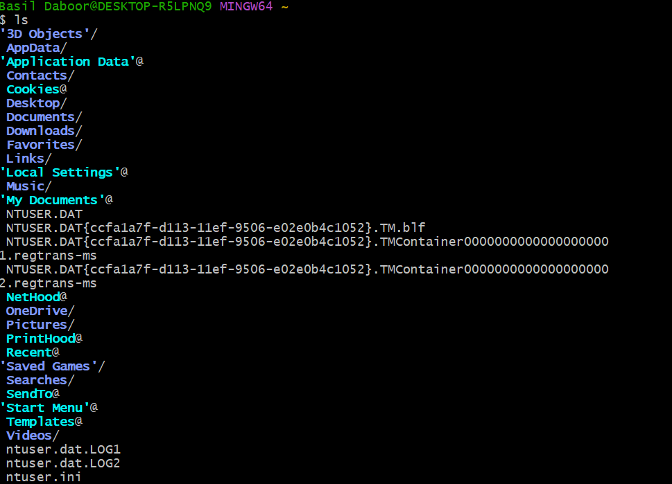
2.List all files and directories, including hidden ones
Answer: ls -a
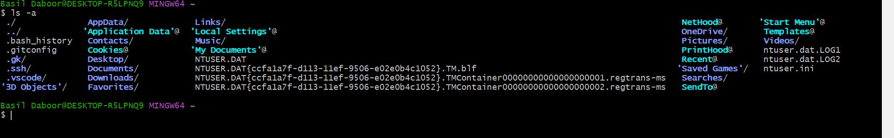
3.List files and directories with detailed information
Answer: ls -l
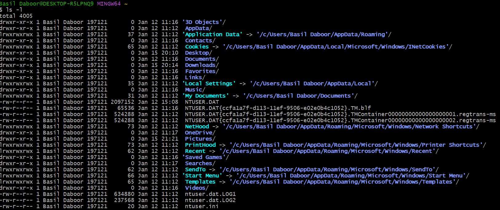
4.Print the current working directory
Answer: pwd
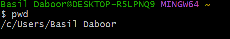
5.Change to a different directory
Answer: cd videos
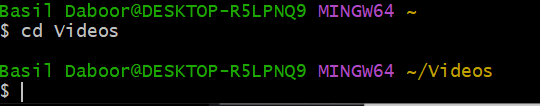
6.Go back to the previous directory
Answer: cd ..
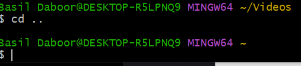
7.Create a new directory
Answer: mkdir new_folder
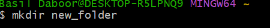
8.Remove an empty directory
Answer: rmdir new_folder
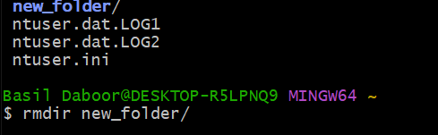
9.Copy a file to another location
Answer: cp basil.html
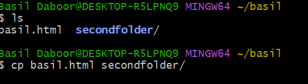
10.Move a file to another location or rename it
Answer: mv basil.html second_folder/
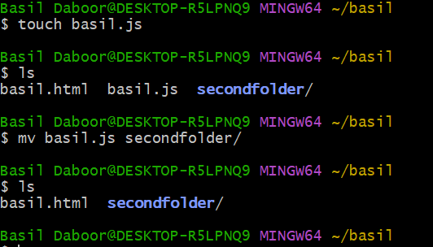
11.Delete a file
Answer: rm basil.html
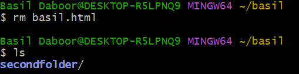
12.Delete a directory and its contents
Answer: rm -r second_folder
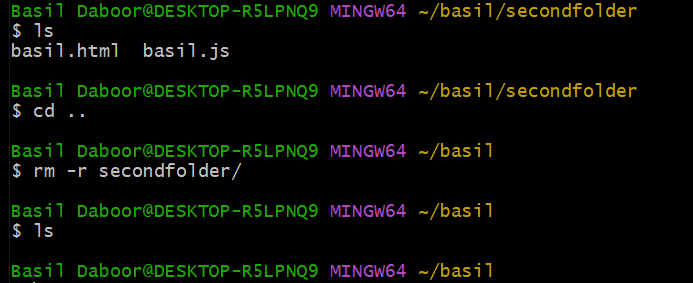
13.Display the contents of a file
Answer: cat basil.txt
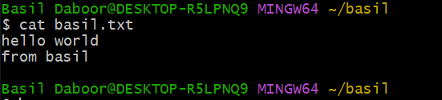
14. Display the first few lines of a file
Answer: head basil.txt
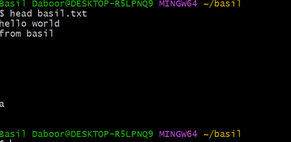
15.Display the last few lines of a file
Answer: tail basil.txt
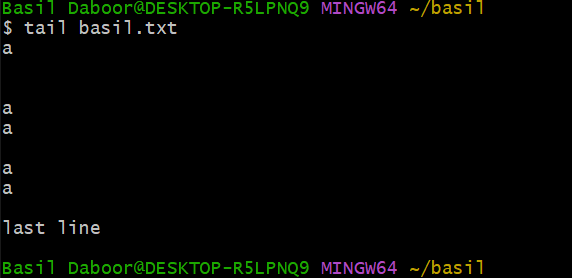